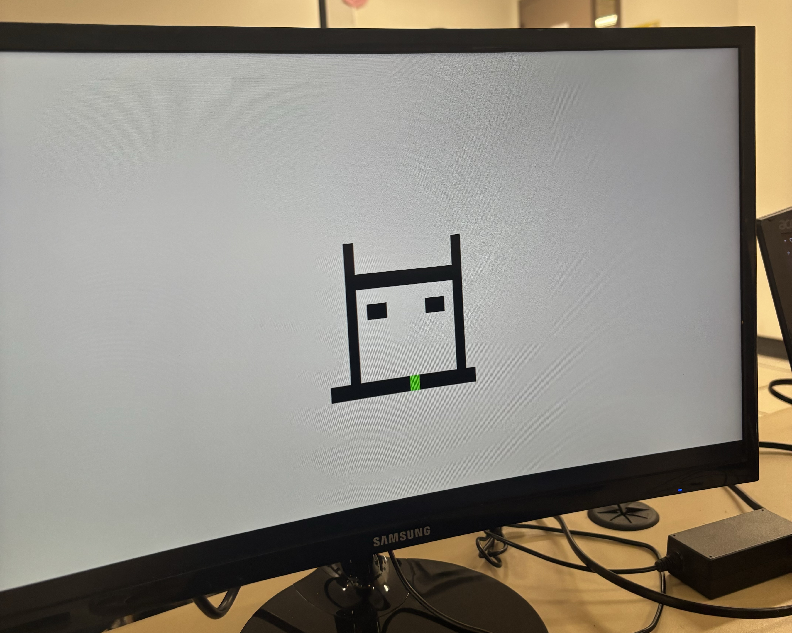
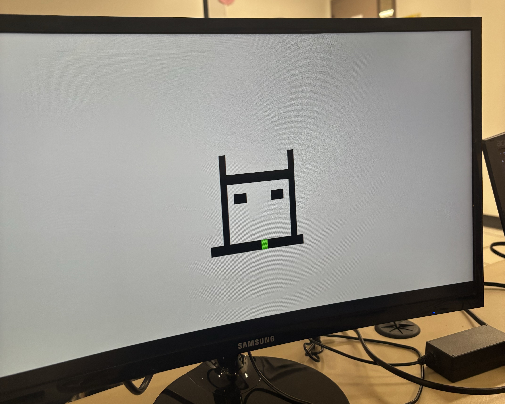

Projects
Project 1
Analog Line-Following-Robot
Designed a 100% analog line-follower. It uses dual photoresistors, mosfet transistors, and an h-bridge to control the direction and speed of the DC motors.
Smart Car
Designed a smart car using IR Sensors, Stepper Motors, a power supply circuit made of capacitors to smooth the noisy voltage signals, and TM4C Microcontroller programming in C. The robot functions similar to a micromouse and avoids hitting walls by turning when the IR sensor recieves an input signal.
Etch-a-Sketch
 

Recreated Etch-a-Sketch (the classical drawing game), by creating a custom controller made of rotary encoders and resistors, Nexy's A7-100T FPGA Board, Verilog Programming, and a VGA cable to output it to the monitor.
Banking Simulator

Designed a banking simulator that gives users options to create accounts of many different types. It uses Luhn's Algorithm to distinguish between real and fake credit cards. This simulator also shows expertise in Data Structures and Algorithms using C programming.
Infinity Mirror
Created and designed an infinity mirror using white pine wood, stain, LED strips, an acrylic mirror to replicate the infinite effect, a 6.5V battery pack to power the mirror, and current-limiting resistors.
Clock
I designed a clock using white pine wood, stain, aluminum arms, internal circuitry and a 6v battery pack. This project taught me a lot about cost efficiency, design and how analog circuits work in the world of engineering.